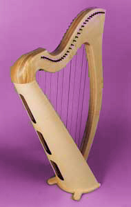
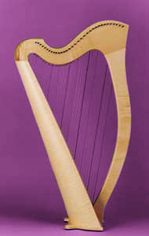

|  |
Essentially the same high quality instrument as the Norris Professional Harp, but at a lower price made possible by simplifying decorative mouldings and the feet! No compromise is made to the very high musical standards expected of a Norris Harp. The Basic Pro Harp is fitted with Norris Semitone Levers, which are the finest professional levers available and instruments can be made with heavy or light gauge strings to suit the playing style and sound preferred by different players. Basic Pro Harps are available in Figured Sycamore or American Black Walnut and represent exceptionally good 'value for money'. |
 |